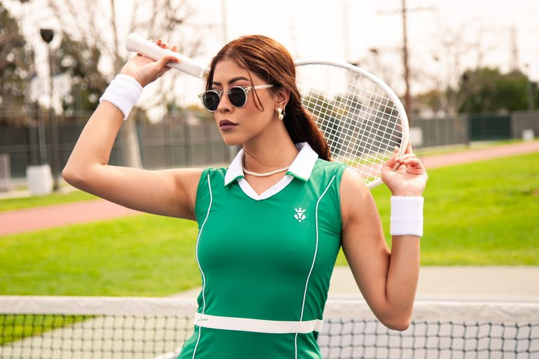
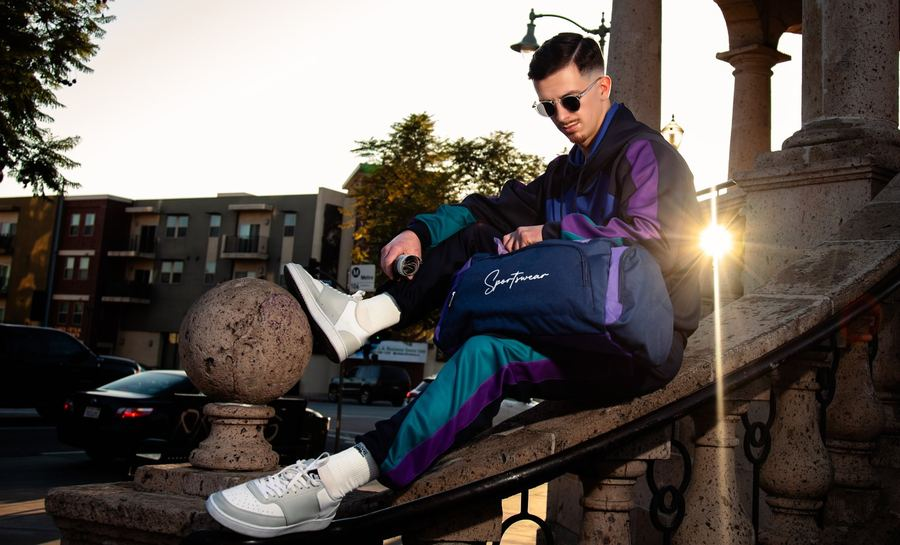
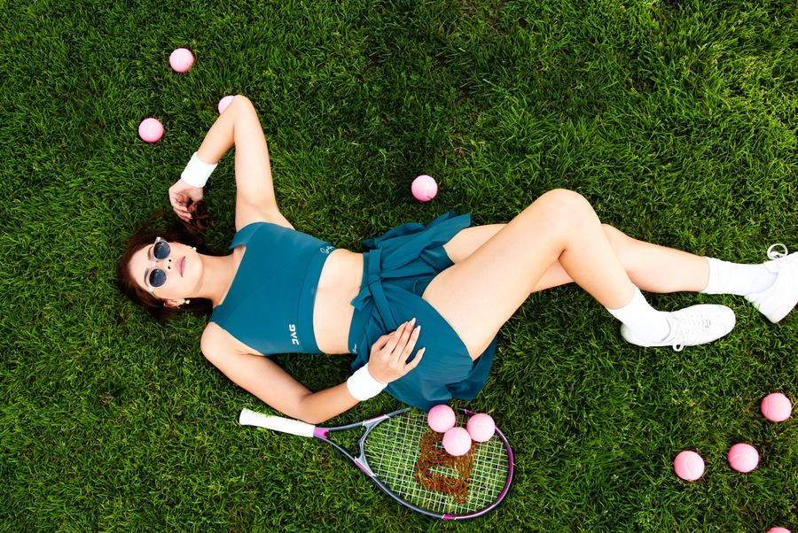
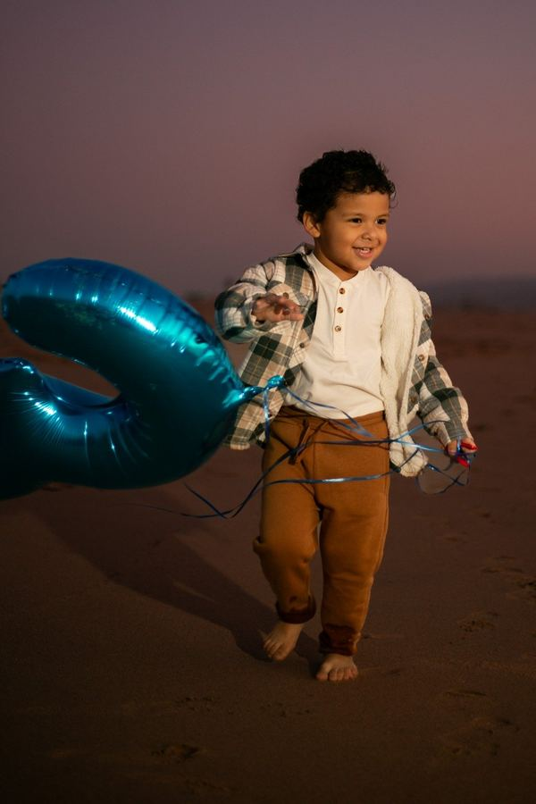
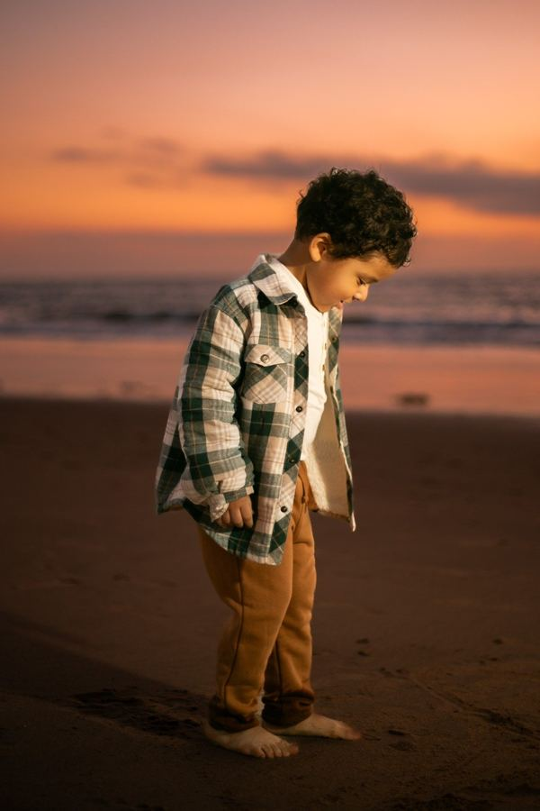

Home
Portfolio · Portraits
Portraits
Portraits made with a clear point of view, wherever the subject feels most like themselves.






Portraits made with a clear point of view, wherever the subject feels most like themselves.




